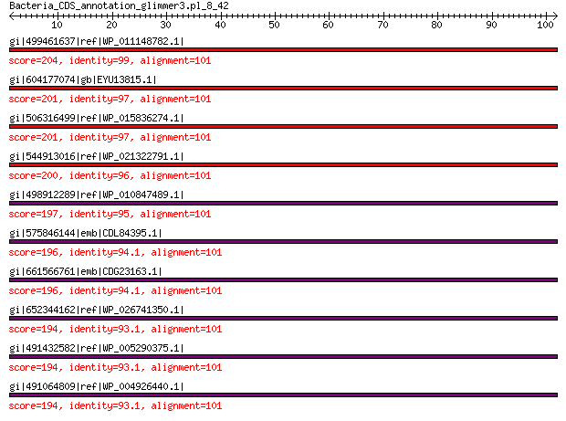

bitscore colors: <40, 40-50 , 50-80, 80-200, >200
 BLASTP 2.2.31+
Reference: Stephen F. Altschul, Thomas L. Madden, Alejandro A.
Schaffer, Jinghui Zhang, Zheng Zhang, Webb Miller, and David J.
Lipman (1997), "Gapped BLAST and PSI-BLAST: a new generation of
protein database search programs", Nucleic Acids Res. 25:3389-3402.
Reference for composition-based statistics: Alejandro A. Schaffer,
L. Aravind, Thomas L. Madden, Sergei Shavirin, John L. Spouge, Yuri
I. Wolf, Eugene V. Koonin, and Stephen F. Altschul (2001),
"Improving the accuracy of PSI-BLAST protein database searches with
composition-based statistics and other refinements", Nucleic Acids
Res. 29:2994-3005.
Database: All non-redundant GenBank CDS translations+PDB+SwissProt+PIR+PRF
excluding environmental samples from WGS projects
49,011,213 sequences; 17,563,301,199 total letters
Query= Bacteria_CDS_annotation_glimmer3.pl_8_42
Length=101
Score E
Sequences producing significant alignments: (Bits) Value
gi|499461637|ref|WP_011148782.1| 30S ribosomal protein S14 204 2e-65
gi|604177074|gb|EYU13815.1| SSU ribosomal protein S14P 201 1e-64
gi|506316499|ref|WP_015836274.1| 30S ribosomal protein S14 201 2e-64
gi|544913016|ref|WP_021322791.1| 30S ribosomal protein S14 200 6e-64
gi|498912289|ref|WP_010847489.1| MULTISPECIES: 30S ribosomal pro... 197 5e-63
gi|575846144|emb|CDL84395.1| 30S ribosomal protein S14 196 2e-62
gi|661566761|emb|CDG23163.1| 30S ribosomal protein S14 196 3e-62
gi|652344162|ref|WP_026741350.1| 30S ribosomal protein S14 194 8e-62
gi|491432582|ref|WP_005290375.1| MULTISPECIES: 30S ribosomal pro... 194 9e-62
gi|491064809|ref|WP_004926440.1| 30S ribosomal protein S14 194 1e-61
>gi|499461637|ref|WP_011148782.1| 30S ribosomal protein S14 [Photorhabdus luminescens]
gi|37528530|ref|NP_931875.1| 30S ribosomal protein S14 [Photorhabdus luminescens subsp. laumondii
TTO1]
gi|81572237|sp|Q7MYG4.1|RS14_PHOLL RecName: Full=30S ribosomal protein S14 [Photorhabdus luminescens
subsp. laumondii TTO1]
gi|36787968|emb|CAE17085.1| 30S ribosomal protein S14 [Photorhabdus luminescens subsp. laumondii
TTO1]
Length=101
Score = 204 bits (518), Expect = 2e-65, Method: Compositional matrix adjust.
Identities = 100/101 (99%), Positives = 101/101 (100%), Gaps = 0/101 (0%)
Query 1 MAKQSLKARDVKRAKLAEKFFTKRVELKAVISDVNASDEERWNAVLKLQTLPRDSSPSRQ 60
MAKQS+KARDVKRAKLAEKFFTKRVELKAVISDVNASDEERWNAVLKLQTLPRDSSPSRQ
Sbjct 1 MAKQSMKARDVKRAKLAEKFFTKRVELKAVISDVNASDEERWNAVLKLQTLPRDSSPSRQ 60
Query 61 RNRCRQTGRPHAFLRKFGLSRIKVREAAMRGEIPGLKKASW 101
RNRCRQTGRPHAFLRKFGLSRIKVREAAMRGEIPGLKKASW
Sbjct 61 RNRCRQTGRPHAFLRKFGLSRIKVREAAMRGEIPGLKKASW 101
>gi|604177074|gb|EYU13815.1| SSU ribosomal protein S14P [Photorhabdus luminescens BA1]
Length=101
Score = 201 bits (512), Expect = 1e-64, Method: Compositional matrix adjust.
Identities = 98/101 (97%), Positives = 101/101 (100%), Gaps = 0/101 (0%)
Query 1 MAKQSLKARDVKRAKLAEKFFTKRVELKAVISDVNASDEERWNAVLKLQTLPRDSSPSRQ 60
MAKQS+KARDVKRAKLAEKFFTKRVEL+A+ISDVNASDEERWNAVLKLQTLPRDSSPSRQ
Sbjct 1 MAKQSMKARDVKRAKLAEKFFTKRVELRAIISDVNASDEERWNAVLKLQTLPRDSSPSRQ 60
Query 61 RNRCRQTGRPHAFLRKFGLSRIKVREAAMRGEIPGLKKASW 101
RNRCRQTGRPHAFLRKFGLSRIKVREAAMRGEIPGLKKASW
Sbjct 61 RNRCRQTGRPHAFLRKFGLSRIKVREAAMRGEIPGLKKASW 101
>gi|506316499|ref|WP_015836274.1| 30S ribosomal protein S14 [Photorhabdus asymbiotica]
gi|253991676|ref|YP_003043032.1| 30S ribosomal subunit protein S14 [Photorhabdus asymbiotica]
gi|253783126|emb|CAQ86291.1| 30S ribosomal subunit protein S14 [Photorhabdus asymbiotica]
Length=101
Score = 201 bits (512), Expect = 2e-64, Method: Compositional matrix adjust.
Identities = 98/101 (97%), Positives = 100/101 (99%), Gaps = 0/101 (0%)
Query 1 MAKQSLKARDVKRAKLAEKFFTKRVELKAVISDVNASDEERWNAVLKLQTLPRDSSPSRQ 60
MAKQS+KARDVKR KLAEKFFTKRVELKA+ISDVNASDEERWNAVLKLQTLPRDSSPSRQ
Sbjct 1 MAKQSMKARDVKRVKLAEKFFTKRVELKAIISDVNASDEERWNAVLKLQTLPRDSSPSRQ 60
Query 61 RNRCRQTGRPHAFLRKFGLSRIKVREAAMRGEIPGLKKASW 101
RNRCRQTGRPHAFLRKFGLSRIKVREAAMRGEIPGLKKASW
Sbjct 61 RNRCRQTGRPHAFLRKFGLSRIKVREAAMRGEIPGLKKASW 101
>gi|544913016|ref|WP_021322791.1| 30S ribosomal protein S14 [Photorhabdus temperata]
gi|530711208|gb|EQC02069.1| 30S ribosomal protein S14 [Photorhabdus temperata subsp. temperata
M1021]
gi|550875210|gb|ERT14243.1| 30S ribosomal protein S14 [Photorhabdus temperata J3]
gi|572731304|gb|ETS29493.1| SSU ribosomal protein S14P [Photorhabdus temperata subsp. khanii
NC19]
gi|662546835|gb|KER01473.1| SSU ribosomal protein S14P [Photorhabdus temperata subsp. temperata
Meg1]
Length=101
Score = 200 bits (508), Expect = 6e-64, Method: Compositional matrix adjust.
Identities = 97/101 (96%), Positives = 99/101 (98%), Gaps = 0/101 (0%)
Query 1 MAKQSLKARDVKRAKLAEKFFTKRVELKAVISDVNASDEERWNAVLKLQTLPRDSSPSRQ 60
MAKQS+KARDVKR KLAEKFFTKRVELKA+ISDVNASDEERWNAVLKLQTLPRDSSPSRQ
Sbjct 1 MAKQSMKARDVKRVKLAEKFFTKRVELKAIISDVNASDEERWNAVLKLQTLPRDSSPSRQ 60
Query 61 RNRCRQTGRPHAFLRKFGLSRIKVREAAMRGEIPGLKKASW 101
RNRCRQTGRPH FLRKFGLSRIKVREAAMRGEIPGLKKASW
Sbjct 61 RNRCRQTGRPHGFLRKFGLSRIKVREAAMRGEIPGLKKASW 101
>gi|498912289|ref|WP_010847489.1| MULTISPECIES: 30S ribosomal protein S14 [Xenorhabdus]
gi|290477179|ref|YP_003470094.1| 30S ribosomal subunit protein S14 [Xenorhabdus bovienii SS-2004]
gi|300721379|ref|YP_003710650.1| 30S ribosomal protein S14 [Xenorhabdus nematophila ATCC 19061]
gi|289176527|emb|CBJ83336.1| 30S ribosomal subunit protein S14 [Xenorhabdus bovienii SS-2004]
gi|297627867|emb|CBJ88413.1| 30S ribosomal subunit protein S14 [Xenorhabdus nematophila ATCC
19061]
gi|484362900|emb|CCW30289.1| 30S ribosomal protein S14 [Xenorhabdus nematophila F1]
gi|575849925|emb|CDL87620.1| 30S ribosomal protein S14 [Xenorhabdus cabanillasii JM26]
gi|661559770|emb|CDG16001.1| 30S ribosomal protein S14 [Xenorhabdus doucetiae]
gi|666603404|emb|CDH29085.1| 30S ribosomal subunit protein S14 [Xenorhabdus bovienii str.
Jollieti]
gi|666608316|emb|CDH05727.1| 30S ribosomal subunit protein S14 [Xenorhabdus bovienii str.
oregonense]
gi|666612576|emb|CDH19744.1| 30S ribosomal subunit protein S14 [Xenorhabdus bovienii str.
kraussei Quebec]
gi|666617963|emb|CDG87090.1| 30S ribosomal subunit protein S14 [Xenorhabdus bovienii str.
feltiae France]
gi|666621609|emb|CDG92290.1| 30S ribosomal subunit protein S14 [Xenorhabdus bovienii str.
feltiae Florida]
gi|666628083|emb|CDG99527.1| 30S ribosomal subunit protein S14 [Xenorhabdus bovienii str.
feltiae Moldova]
gi|666631594|emb|CDH31944.1| 30S ribosomal subunit protein S14 [Xenorhabdus bovienii str.
Intermedium]
gi|666634412|emb|CDH25411.1| 30S ribosomal subunit protein S14 [Xenorhabdus bovienii str.
kraussei Becker Underwood]
gi|668988315|emb|CDG95306.1| 30S ribosomal subunit protein S14 [Xenorhabdus bovienii str.
puntauvense]
Length=101
Score = 197 bits (502), Expect = 5e-63, Method: Compositional matrix adjust.
Identities = 96/101 (95%), Positives = 99/101 (98%), Gaps = 0/101 (0%)
Query 1 MAKQSLKARDVKRAKLAEKFFTKRVELKAVISDVNASDEERWNAVLKLQTLPRDSSPSRQ 60
MAKQS+KARDVKRAKLAEKFF KRVELKA+ISDVNASDE+RWNAVLKLQTLPRDSSP RQ
Sbjct 1 MAKQSMKARDVKRAKLAEKFFAKRVELKAIISDVNASDEDRWNAVLKLQTLPRDSSPCRQ 60
Query 61 RNRCRQTGRPHAFLRKFGLSRIKVREAAMRGEIPGLKKASW 101
RNRCRQTGRPHAFLRKFGLSRIKVREAAMRGEIPGLKKASW
Sbjct 61 RNRCRQTGRPHAFLRKFGLSRIKVREAAMRGEIPGLKKASW 101
>gi|575846144|emb|CDL84395.1| 30S ribosomal protein S14 [Xenorhabdus szentirmaii DSM 16338]
Length=101
Score = 196 bits (498), Expect = 2e-62, Method: Compositional matrix adjust.
Identities = 95/101 (94%), Positives = 98/101 (97%), Gaps = 0/101 (0%)
Query 1 MAKQSLKARDVKRAKLAEKFFTKRVELKAVISDVNASDEERWNAVLKLQTLPRDSSPSRQ 60
MAKQS+KARDVKRAKLAEKFF KRVELKA+ISDVNASDE+RWNAVLKLQTLPRDSSP RQ
Sbjct 1 MAKQSMKARDVKRAKLAEKFFAKRVELKAIISDVNASDEDRWNAVLKLQTLPRDSSPCRQ 60
Query 61 RNRCRQTGRPHAFLRKFGLSRIKVREAAMRGEIPGLKKASW 101
RNRCRQTGRPH FLRKFGLSRIKVREAAMRGEIPGLKKASW
Sbjct 61 RNRCRQTGRPHGFLRKFGLSRIKVREAAMRGEIPGLKKASW 101
>gi|661566761|emb|CDG23163.1| 30S ribosomal protein S14 [Xenorhabdus poinarii G6]
Length=101
Score = 196 bits (497), Expect = 3e-62, Method: Compositional matrix adjust.
Identities = 95/101 (94%), Positives = 99/101 (98%), Gaps = 0/101 (0%)
Query 1 MAKQSLKARDVKRAKLAEKFFTKRVELKAVISDVNASDEERWNAVLKLQTLPRDSSPSRQ 60
MAKQS+KARDVKRAKLAEKFF KRVELKA+ISDVNASDE+RW+AVLKLQTLPRDSSP RQ
Sbjct 1 MAKQSMKARDVKRAKLAEKFFAKRVELKAIISDVNASDEDRWDAVLKLQTLPRDSSPCRQ 60
Query 61 RNRCRQTGRPHAFLRKFGLSRIKVREAAMRGEIPGLKKASW 101
RNRCRQTGRPHAFLRKFGLSRIKVREAAMRGEIPGLKKASW
Sbjct 61 RNRCRQTGRPHAFLRKFGLSRIKVREAAMRGEIPGLKKASW 101
>gi|652344162|ref|WP_026741350.1| 30S ribosomal protein S14 [Lonsdalea quercina]
Length=101
Score = 194 bits (494), Expect = 8e-62, Method: Compositional matrix adjust.
Identities = 94/101 (93%), Positives = 99/101 (98%), Gaps = 0/101 (0%)
Query 1 MAKQSLKARDVKRAKLAEKFFTKRVELKAVISDVNASDEERWNAVLKLQTLPRDSSPSRQ 60
MAKQS+KAR+VKR KLA+KFF KRVELKA+ISDVNASDE+RWNAVLKLQTLPRDSSPSRQ
Sbjct 1 MAKQSMKAREVKRVKLADKFFAKRVELKAIISDVNASDEDRWNAVLKLQTLPRDSSPSRQ 60
Query 61 RNRCRQTGRPHAFLRKFGLSRIKVREAAMRGEIPGLKKASW 101
RNRCRQTGRPHAFLRKFGLSRIKVREAAMRGEIPGLKKASW
Sbjct 61 RNRCRQTGRPHAFLRKFGLSRIKVREAAMRGEIPGLKKASW 101
>gi|491432582|ref|WP_005290375.1| MULTISPECIES: 30S ribosomal protein S14 [Edwardsiella]
gi|291088831|gb|EFE21392.1| ribosomal protein S14p/S29e [Edwardsiella tarda ATCC 23685]
gi|451313662|dbj|GAC66164.1| 30S ribosomal protein S14 [Edwardsiella tarda ATCC 15947 = NBRC
105688]
Length=101
Score = 194 bits (494), Expect = 9e-62, Method: Compositional matrix adjust.
Identities = 94/101 (93%), Positives = 98/101 (97%), Gaps = 0/101 (0%)
Query 1 MAKQSLKARDVKRAKLAEKFFTKRVELKAVISDVNASDEERWNAVLKLQTLPRDSSPSRQ 60
MAKQS+KAR+VKR KLAEKFF KR ELKA+ISDVNASDE+RWNAVLKLQTLPRDSSPSRQ
Sbjct 1 MAKQSMKAREVKRVKLAEKFFAKRAELKAIISDVNASDEDRWNAVLKLQTLPRDSSPSRQ 60
Query 61 RNRCRQTGRPHAFLRKFGLSRIKVREAAMRGEIPGLKKASW 101
RNRCRQTGRPHAFLRKFGLSRIKVREAAMRGEIPGLKKASW
Sbjct 61 RNRCRQTGRPHAFLRKFGLSRIKVREAAMRGEIPGLKKASW 101
>gi|491064809|ref|WP_004926440.1| 30S ribosomal protein S14 [Providencia stuartii]
gi|386743645|ref|YP_006216824.1| 30S ribosomal protein S14 [Providencia stuartii MRSN 2154]
gi|188019718|gb|EDU57758.1| ribosomal protein S14p/S29e [Providencia stuartii ATCC 25827]
gi|384480338|gb|AFH94133.1| 30S ribosomal protein S14 [Providencia stuartii MRSN 2154]
Length=101
Score = 194 bits (493), Expect = 1e-61, Method: Compositional matrix adjust.
Identities = 94/101 (93%), Positives = 99/101 (98%), Gaps = 0/101 (0%)
Query 1 MAKQSLKARDVKRAKLAEKFFTKRVELKAVISDVNASDEERWNAVLKLQTLPRDSSPSRQ 60
MAK+S+KARDVKRAKLAEKFF KRVELKA+ISDVNASDE+RW+AVLKLQTLPRDSSPSRQ
Sbjct 1 MAKKSMKARDVKRAKLAEKFFAKRVELKAIISDVNASDEDRWDAVLKLQTLPRDSSPSRQ 60
Query 61 RNRCRQTGRPHAFLRKFGLSRIKVREAAMRGEIPGLKKASW 101
RNRCRQTGRPH FLRKFGLSRIKVREAAMRGEIPGLKKASW
Sbjct 61 RNRCRQTGRPHGFLRKFGLSRIKVREAAMRGEIPGLKKASW 101
Lambda K H a alpha
0.319 0.130 0.373 0.792 4.96
Gapped
Lambda K H a alpha sigma
0.267 0.0410 0.140 1.90 42.6 43.6
Effective search space used: 438108004959